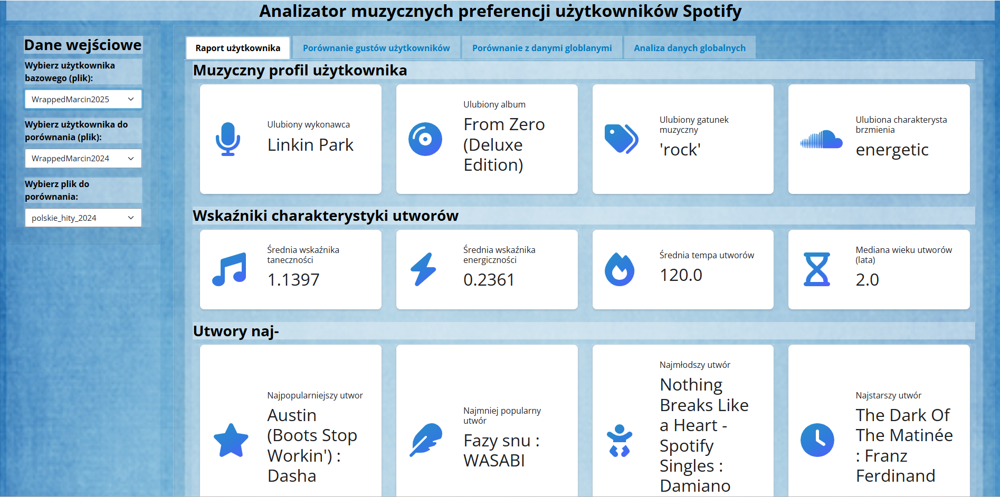
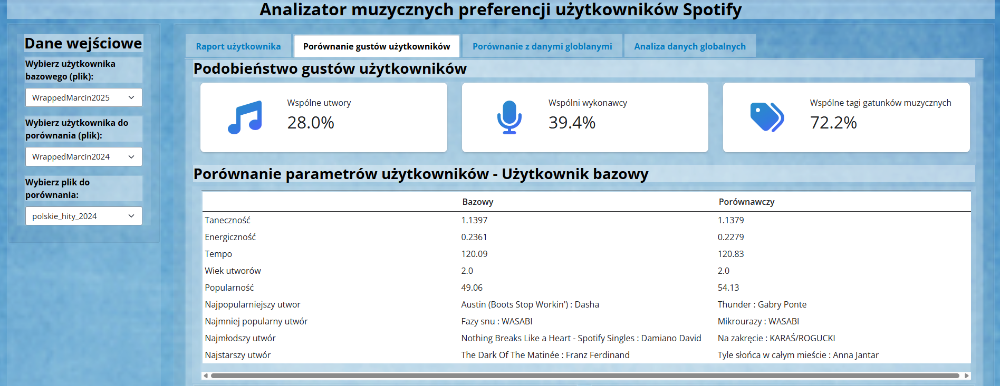
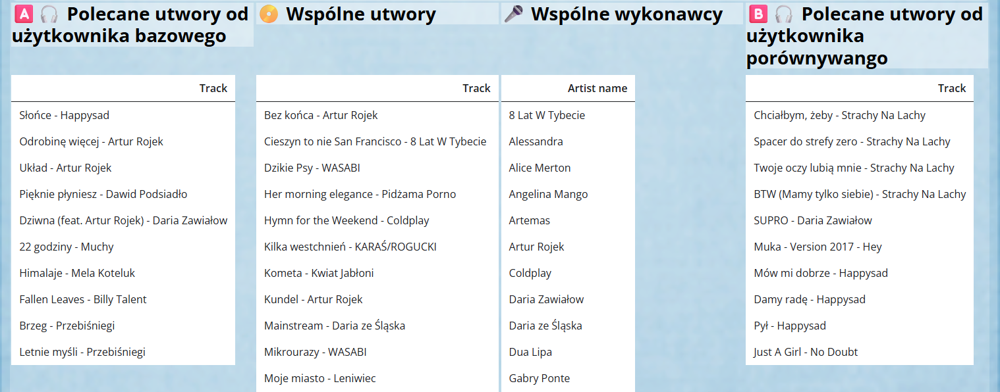
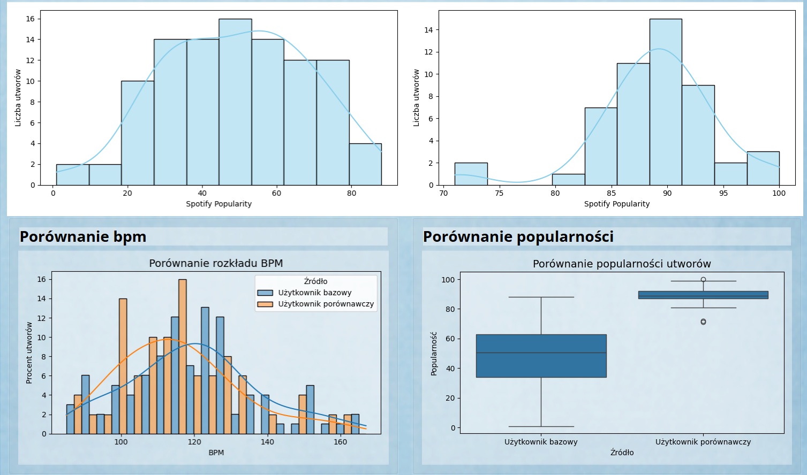

Pipeline czyszczenia i walidacji danych. End-to-end data pipeline: uzupełnia dane z pliku csv przez API (Ingestion), następnie obrabia je w Pythonie (Curation), a na końcu wyświetla je za pomocą Shiny (Insight). Projekt zaliczeniowy studiów podyplomowych Analityk Danych - Data Scientists. Celem aplikacji jest pobranie top 100 utworów użytkownika (dostarczone w pliku csv), wyświetlenie podstawowych wskaźników oraz porównanie ich z innymi użytkownikami lub globalnymi/ krajowymi listami top w danym roku. Analiza utworów odbywa się za pomocą API Spotify lastFM oraz połączenia yt_dlp oraz librosa. UI wykonane za pomocą rozwiązania Shiny for Python.



